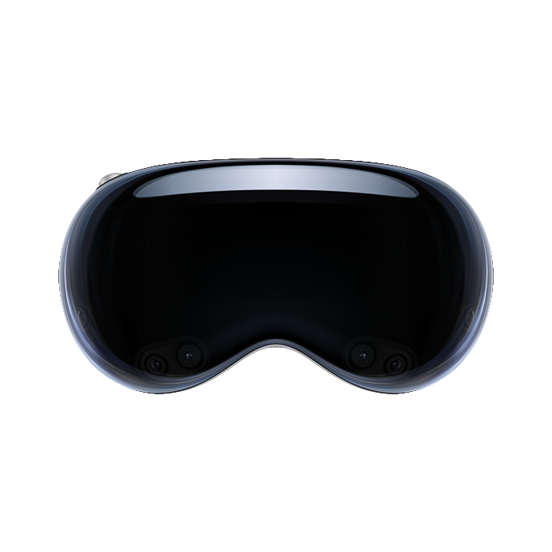
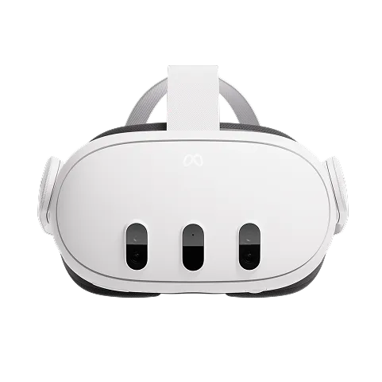

Welcome to the SV-QoE Dataset Website
Scientific video dataset for immersive quality assessment
Interactive 3D Model
Information
The SV-QoE dataset consists of stereoscopic and 2D video sequences generated entirely inside Unity Engine (v.6000.0.27f1). The virtual cameras were calibrated to simulate human binocular vision:
- Stereo baseline: 65 mm (average human interpupillary distance)
- Left/Right camera positions:
- Left_Camera: X = −0.325 m, Y = 0, Z = 0
- Right_Camera: X = +0.325 m, Y = 0, Z = 0
- Central_Camera: X = 0, Y = 0, Z = 0
- Field of View (horizontal): 137°, providing a wide-angle view.
- Each camera rendered at 4K resolution (3840 × 2160) with 60 FPS output and 16:9 aspect ratio.
Rendering Settings
- Clipping planes: Near = 0.3 units, Far = 1000 units
- Depth priority: -1
- Occlusion culling enabled for performance
- HDR and MSAA enabled
- Render Path: set to “Use Graphics Settings”
Capture and Compression
- Videos were recorded with Unity Recorder and cinematic motion via Cinemachine.
- Raw videos encoded as MV-HEVC (.MOV) for stereoscopic playback.
- Multi-quality versions generated at different CRF levels (x265 codec), where CRF ranged 0–51:
- CRF=0: Lossless
- CRF=18: Near-lossless
- CRF=23: Balanced (default)
- CRF=28–35: Reduced bitrate, acceptable quality
- CRF=51: Maximum compression

Apple Vision Pro
Immersive spatial video playback experience

Meta Quest 3
Compatible VR headset for spatial video viewing
Dataset Author
Access Full Dataset
You can access the full dataset through here: Go to SV-QoE Dataset